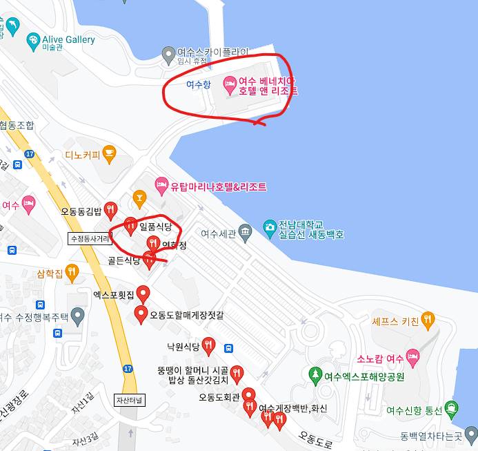

홈페이지로 돌아가는 버튼
여수는 전라남도에 위치한 아름다운 바다를 느낄 수 있는 도시입니다.
여수는 2010여수 엑스포를 거치며 커다란 인프라적 성장을 마쳐서 여행을 하기에 매우 좋은 도시로 변화했습니다.
전라북도에서 전통을 느낄 수 있었다면 이번에 전라남도는 그중에 여수는
한국의 자연을 느끼기에 가장 최고의 장소일것입니다.
한국의 아름다운 자연환경과 그중에도 청량한 바다를 즐기고 싶다면 이번에 전남 여수로 떠나보세요.

자가용의 경우 서울에서 부산까지 약 4시간이 소요됩니다.
통행료는 약 18000원이며 주유비는 약 52000원 정도가 발생합니다.
자세한 정보는 해당 사이트를 통해서 확인이 가능합니다.
대중교통의 경우 버스와 기차, 비행기가 존재합니다.
버스의 경우 서울기준 4시간 반 정도 소요되며 다양한 터미널을 통해서 접근이 가능합니다.
비용의 경우 약 23000원 정도 발생합니다.
기차의 경우 용산역기준 약 2시간 40분 정도가 소요되어 여천역에 도착합니다.
비용의 경우 약 46000원 정도 발생합니다.
비행기의 경우 김포공항에서 약 1시간 정도가 소요되며 여수공항에 도착합니다 비용의 경우 변동성이 있지만 평균적으로 기차보다 약 2만원 정도 더 비쌉니다.
여수의 맛집으로는 여수의 게장을 즐길 수 있는 연화정을 추천합니다.
구글 평점 기준 3.9점 이상이며 리뷰수도 260건이 넘을 정도로 검증된 게장 백반 전문점입니다.
1인당 2만원 내외로 게장, 꼬막, 꼬막비빔밥 등등 다양한 여수의 맛을 합리적인 가격으로 즐길 수 있습니다.
식당의 위치는 숙소와 매우 가까워서 접근하기 매우 간편하다는 장점이 있습니다.


여수의 숙소로는 베네치아호텔앤리조트를 추천드립니다.
여수는 바다가 매력적인 도시인 만큼 바다 앞에 위치한 배네치아호텔을 추천드립니다.
베네치아호텔은 여수엑스포와 케이블카 등등 다양한 관광시설과 인접해 있어서
여행을 즐기기에 최적화된 곳에 위치하고 있습니다.
숙소의 가격은 1박에 10만원이하 저렴하게 여수밤바다를 즐기실 수 있습니다.
상대적으로 저렴한 가격에 비해서 루프탑 풀, bar 등등 다양한 부대시설을 갖추고 있어서 편의성을 갖춘 좋은 숙소입니다.
여수하면 떠오르는 밤바다를 아늑한 호텔에서 느끼고 싶다면 여수의 베네치아 호텔을 추천드립니다.
자세한 정보는 해당 사이트를 참고해주세요.